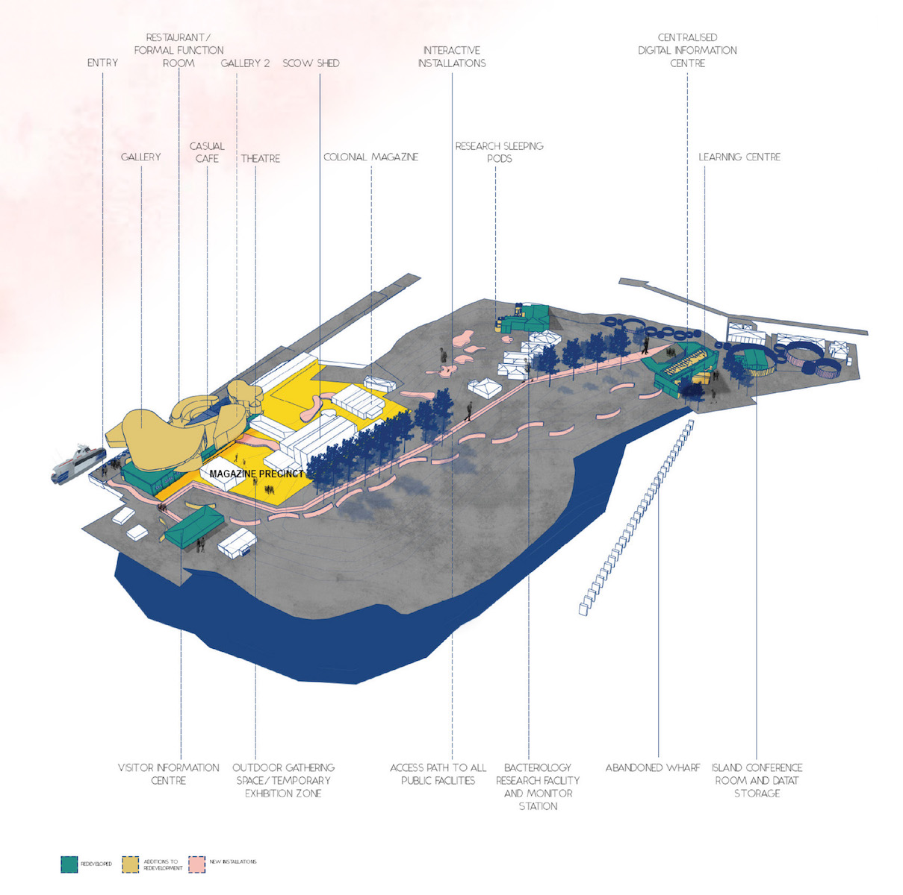
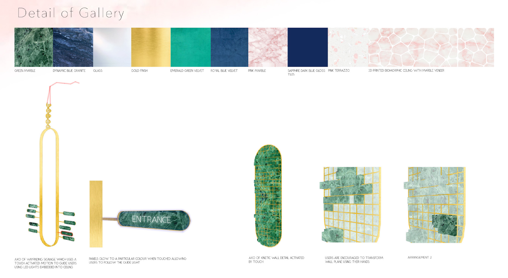
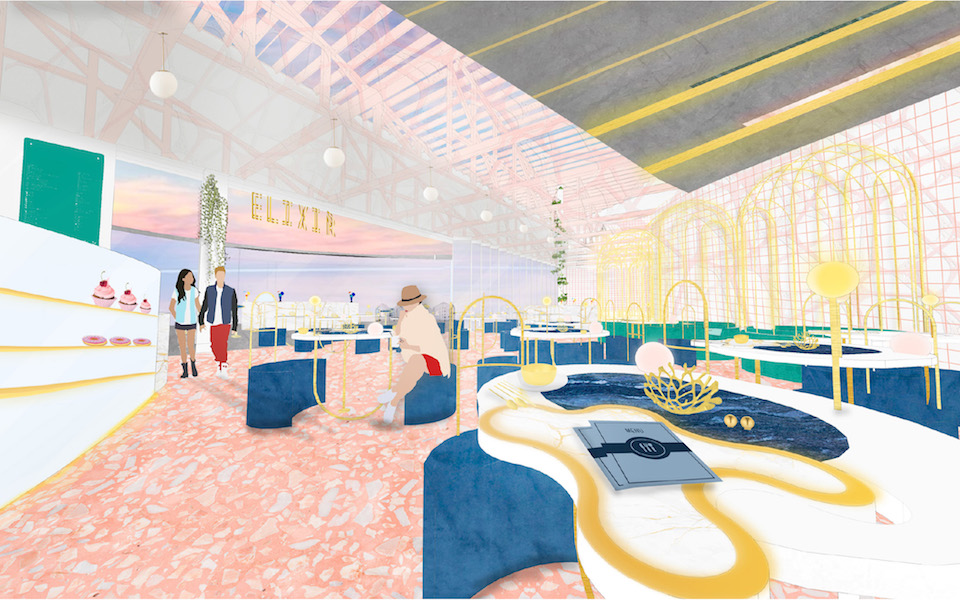
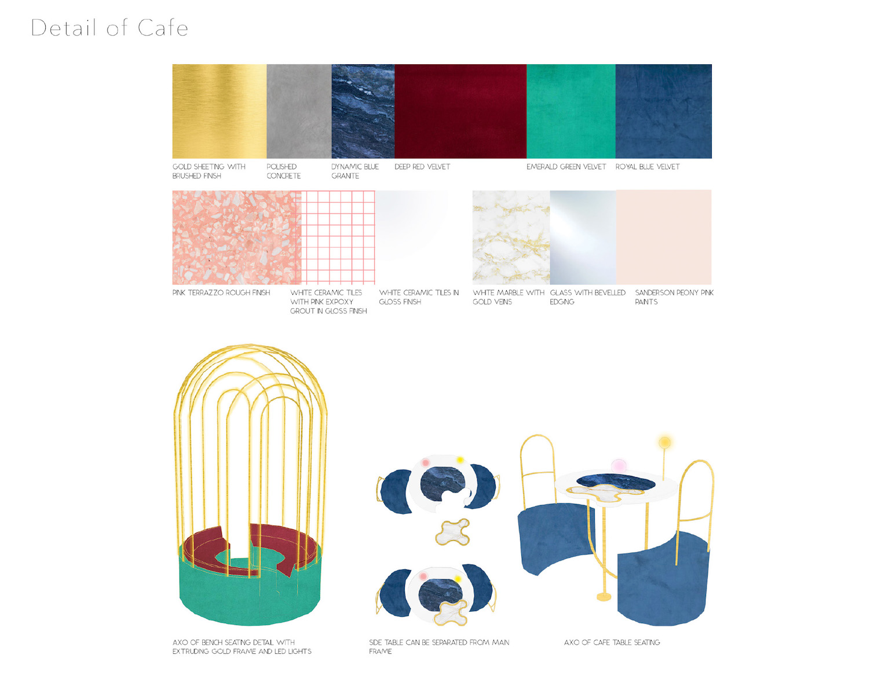
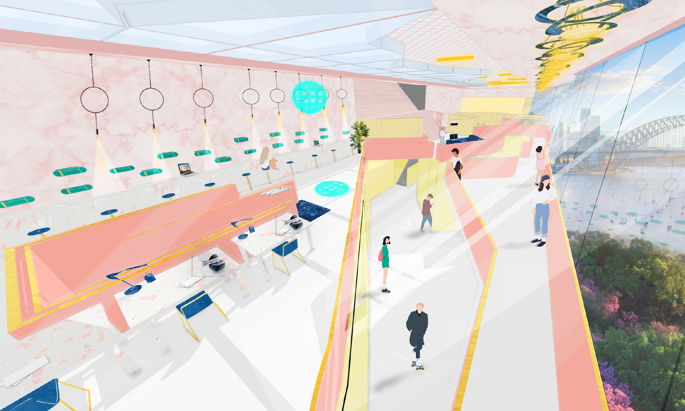

Degree
Interior Architecture
Timeline
Febuary 2018 - October 2018
Category
Interiors
Tools
Sketchup, Photoshop, AutoCad
What is Interior Architecture?
Interior architecture is a degree centred on creating personal interior experiences for individuals. During my degree, I had the opportunity to work on all sorts of projects including heritage buildings, residential housing, temporary spaces, exhibition spaces, community hubs, retail spaces, corporate environments and islands.
Project Overview
The basis for developing a science research centre in the midst of Sydney is to bridge the gap between science and the Australian public. I wanted to combine education and play through the adoption of digital technology within the research centre to educate and facilitate playful interactions for avid learners and science professionals. Being the largest scientific research centre within Australia, the centre will be dedicated to the sole purpose of researching and investigating into bacterial mutations. The centre is very much needed due to the past and potential virus outbreaks in other countries which poses as a threat to Australia and its agriculture. Through the centre, the public will have access to digital libraries, interactive learning centres, exhibitions and relaxation facilities on the island. Some research and storage facilities will be reserved for government personnel. Under one space, professionals and keen learners alike can collaborate and interact with the centre to understand infectious diseases and bacteria as well as the effect has on global health. Overall the island is presented as a playful and educational space.
The Location
Goat Island is a place of national, state and local significance within the Australian historical fabric. Goat Island is located in Port Jackson and is part of the Sydney Harbour National Parks. The island is divided into 7 precincts as shown in the diagram below. Currently, the island is being used as a national park, ship repair facility and navigation port aid.
The Challenge
There is a need to identify cultural opportunities within the heritage areas of the Sydney cityscape. Goat Island in particular is one of the many islands that is under utilised and underdeveloped. The challenge is to revitalise Goat Island as the central hub of Sydney.
The Research
I decided to research on some of the topics that are relevant in today's society. These included:
Health
Education
Technology
Sustainability
One topic that caught my interest and prompted my further research into the idea was Health and in particular infectious diseases. I found
that there was a lack of educational facilities in Sydney on the topic of diseases. Furthermore, from my research on the historical background of Goat Island,
I discovered that one of the heritage listed buildings on the island used to be a laboratory.
So what classifies as an infectious disease?
Infectious diseases are diseases caused by micro-organisms that invade tissue. They impact global society and economy as well as interfere with travel, business, and everyday life activities. These infectious disease can surface in two forms, as newly emerging diseases or as re-emerging diseases. These pathogens can adapt to changing hosts and environments which is why an in-depth study into infectious diseases is vital and essential for the sustenance of global health.
Infectious diseases can be classified into three types:
Epidemic: Widespread disease
Endemic: Regularly found among particular people or in a certain area
Pandemic: Prevalent over a whole country or the world
Infectious diseases are caused by four types of germs:
Case Study
A plague is a disease caused by the bacteria Yersina pests, which is transmitted from infected animals to humans by fleas. The 1900 bubonic plague in Sydney was brought in by rats travelling along the transport routes.
Plague comes in three forms:
Bubonic: Spread by parasites through lymph nodes and causes swelling in armpits and groin area
Septicaemia: Invades the blood stream and can induce toxic shock
Pneumonic: Infects the lungs and spreads through coughing or touching
The plague is spread through a site of infection into the lymphatic system which causes acute inflammation of the lymph nodes. The toxins spread through the body which causes massive haemorrhaging in the internal organs and discolouring the skin.
To this day, the bubonic plague continues to exist around the world with about 3000 human cases reported each year.
Australia's Response
Study has shown that a significant outbreak of the Avian flu in Australia could threaten the agricultural industry, trade, tourism and economy. If an outbreak such as the influenza pandemic occurs, 40 - 70% of the workforce is estimated to not attend work. Up to 50% of staff would boycott work due to fear of infection.
Currently, the national level bodies below are involved in outbreak responses:
Australian health disaster management policy committee
Communicable diseases Australia
Emergency management Australia
Communicable diseases network Australia
Currently, only 4% of the world’s global research funding is dedicated to the research of communicable, nutritional and maternal disorders. It is essential that countries focus on diseases that the biomedical sciences have yet to control.
A number of respondents have expressed their desire for Australia to establish a body equivalent to the US Centre of Disease Control and Presentation. The CDC might congregate resources and research about biological diseases.
Outbreaks aren’t limited to human hosts. In order to develop a secure defence mechanism against biological attacks, research and study should be conducted on microbial diseases in wildlife as well.
The study of biochemistry and genes is essential in combating diseases as most diseases can be defined at a biochemical level. This is due to the fact that genes regulate an organism’s biochemical pathway.
Disease detection and reporting mechanisms need to be streamlined and more adequately-resourced laboratories around Australia should be established to allow the rapid detection and identification of diseases.
The Response & Aim
After identifying the cultural gaps within the Sydney fabric as well as researching on topics relevant to society in Australia, I decided to reimagine Goat Island as a Bacteriology and Science Research Centre. I realised that there was a lack of educational facilities on this topic within Sydney that are open to the public. Through this project, I hope to create a centralised location where professionals and beginners can learn about the topic of bacteriology and infectious diseases. The island would be a mixture of play and education.
Precedents
These are precedents of science research centres around the world currently. I've analysed the pros and cons, as well as the spatial qualities, layout, circulation , architectural strategy, visual connection and private and public spaces of the building.
Site Plan
This is an axonometric projection of Goat Island. The buildings are colour-coded according to their type and scope of proposed work for them.
Precedent Study of Building Categories
This are some precedent studies that I've done after developing the concept of the centre.
After examining the infrastructures available for development I decided to conduct precedent studies of similar categories of buildings to get an idea of the functions and spatial qualities of each building.
Mood Board
I made a mood board of all the materials that I might want to use.
The Entrance

This is a perspective showcasing the entrance and first point of contact between the island and the visitors. There is a waiting zone as well as a small gift kiosk for visitors to purchase ferry tickets or souvenirs.
The Foyer

This is a perspective showing the reception area of the island. Visitors are assisted by the receptionist as well as provided with a wealth of information on the island. There are also interactive technologies available for visitors to play with.
Gallery Space

This is a perspective showcasing the gallery of Goat Island. The gallery is inclusive of an outdoor and indoor area for different functions. The gallery doubles as a museum with stairs on the other end leading to a theatre space. The gallery has a twisting floor plate and sits on top of the cafe underneath overlooking the cafe-goers and wharf. The "stacking" element of the floor plate facilities interaction between each floor and its shape mimics the organic structure of the viruses.
Detail of the gallery's wayfinding system
This touch activated system complements the guide lights installed on the ceiling of the gallery to direct visitors to their destinations.
Education Room

The design intent is to create a space for young visitors to the island to learn about topics relating to bacteriology. It features an interactive touch screen as well as holograms for learning purposes. The classroom has a floor to ceiling window view of the Sydney Harbour.
Island Cafe
This is a perspective showcasing the cafe of Goat Island. The design intent is to create a space for visitors and researchers on the island to meet up, be nourished and enjoy the island views. The cafe overlooks the Sydney Harbour and is the main restaurant of the island.
Cafe Seating Detail
This is a detail showing the custom designed seating located at the cafe. The detail showcases a more formal booth style and a casual seating style for visitors. The organic shapes and the material palette were inspired by the shape of bacteria and viruses. It has a functional and aesthetic purpose.
Library
This is a perspective showcasing the library of Goat Island. The design intent is to create a space to facilitate the interest for bacteriology. The library houses study areas, educational rooms, data storage facilities and interactive VR rooms.
Library Outdoor Area
This is a perspective showing the outdoor area of the library. At night it transforms into a viewing platform for visitors to admire the Sydney night sky. This generates traffic for the island outside of opening hours as well.
Outdoor Area

This is a perspective showcasing the outdoor seating area of Goat Island. The design intent is to provide a space for visitors to congregate and admire the harbour views. It also serves as a waiting spot for customers waiting for their cafe orders.
Technology Proposed in the project
I decided to utilise these technologies on the island to highlight the playful intent of the island.
Models
I decided to bring my idea to life by building a 1:200 scale model to test various elements of the project. I was able to experiment with how the floor plates stack together, the height of each individual element as well as spacing requirements and the spatial relationship between each element. It was a good tool to use to communicate my designs to people who hasn't been there from the beginning of the journey, not to mention it helps with communicating to potential clients in the future!
Reflecting back on the project, I realised that having a good research foundation is super important. It shapes the entity of your project and gives you guidance into where to go. You shouldn't do something just because you have an interest in it, it should be based on hard facts and statements, not opinions. If you're stuck on inspiration, you should first start with research. Inspiration can derive from many outlets, for me it was a combination of the heritage of Goat island, as well as modern issues and contextual relevance in the global stage.